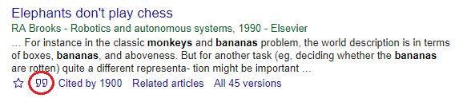

Assignments
1: Poster
Details
Upload the pdf version of your Graduation Thesis Poster.
Criteria
Full marks awarded for uploading poster.
2: Background (100+ words)
Details
Describe the background and motivation for your research by answering the following questions in sentences.
- (lab) Who is your supervisor?
- (research field) What is the general area of research for your lab?
- (importance) How can this research help people?
- (research topic) What is the specific area of research for your Graduation Thesis project?
- (rationale) Why are you interested in this? Why is this important?
Criteria
Full marks awarded for writing at least 100 words otherwise you will receive zero marks. There is no penalty for grammar, spelling, etc.
3: Introduction (200+ words)
Details
Submit the following. Feel free to reuse words from your poster and the previous assignment.
- State the title of your study (approx. 10 words)
- Describe previous work in the same field. Cite at least two sources. Check Graduation Theses in the same area and use Google Scholar. (approx. 100 words)
- What is the new aspect (novelty, originality) in your research (e.g. This is the first study to...)
- What is the aim of your research? (approx. 70 words)
- Write the full bibligraphic references for the two sources cited. In the results page of Google Scholar, you can copy and paste this by simply clicking on the double quotation mark (circled in red below) and selecting a format. (approx. 20 words) 
Criteria
Full marks awarded for writing at least 200 words otherwise you will receive zero marks. There is no penalty for grammar, spelling, etc.
4: Body paragraphs (450+ words)
Details
Write the first draft of three body paragraphs of your thesis. Each paragraph must be at least 150 words. Start with a topic sentence and follow with supporting details (e.g. description, explanation, exemplification).
Paragraph 1 (related works) State the similarities and differences between your research and their research, i.e. compare and contrast. Include references to two previous research publications that relate to your research.
Paragraph 2 (method) Describe your project, include all the steps so that the reader can visualize what you will do. What exactly will create? test? investigate? measure? How will you do it?
Paragraph 3 (introduction, possible results) Do you have a hypothesis? What will your experiment (dis)prove? What results do you expect from your experiment? Which results are likely? Which results are unlikely? Justify your choices (i.e. state the reasons why the results are likely or unlikely).
Criteria
Full marks awarded for writing at least 450 words otherwise you will receive zero marks. There is no penalty for grammar, spelling, etc.
5: Thesis outline (650 words)
Details
Draft the outline for your thesis. Use this basic framework or a specific one for your type of research. Use a mixture of bulletpoint notes and full sentences. Reuse words from your poster and previous assignments.
Front matter Title, your name, supervisor name
Introduction (approx. 300 words) Expand the introduction submitted in earlier assignment (e.g. background, aim, related works, overview)
Method (approx. 150 words) Say in simple words what you will do.
Results (approx. 100 words) Say in simple words what you expect or hope to find, and exactly when you expect to know the results.
Discussion (approx. 100 words) Say what the expected findings might be compared to, contrasted with, used for, etc.
References (approx. 30 words) List at least 3 sources that you used or will use when writing your thesis. Provide the full bibliographic references.
Criteria
Full marks awarded for writing at least 650 words otherwise you will receive zero marks. There is no penalty for grammar, spelling, etc.
6: Related works (300 words)
Details
Literature reviews or descriptions of related works tend to be found in the Introduction section and the Discussion section of graduation theses.
Submit the following.
Background (150 - 250 words) Extend the background subsection of your introduction. Include at least TWO specific references to previous work in the area of your research. Describe the relevant strengths and weaknesses of the work.
Discussion (150 - 250 words) Extend your discussion section. Compare and contrast your expected (or actual) findings with at least TWO specific references to previous work in the area of your research. (Compare = show the similarities; contrast = show the differences)
References Include the full bibliographic reference for each source used in the background and discussion sections. Use the style appropriate for your laboratory.
Criteria
Full marks awarded for:
- writing at least 300 words
- including four citations
- providing accurate references.
7: Draft Graduation Thesis (1000 words)
Details
Submit a draft of your Graduation Thesis of at least 1000 words.
No marks will be deducted for grammatical or spelling mistakes, but please use a spell and grammar checker before submitting.
Include revised versions of each section and subsection listed below. Your headings may differ depending on the type of thesis. You have already written most of this in earlier submissions so copy and paste those into the appropriate sections.
0. Front matter (approx. 20 words)
- Your name, student id, name of supervisor
- Title of research
1. Introduction (approx. 300+ words)
- General background of your laboratory
- General background of your research field
- General background of your research topic
- Specific background of your research topic (cite and explain earlier research)
- Brief summary of related works (cite and explain earlier research)
- The importance and original aspect of your research (e.g. This is the first project to ....)
- Thesis statement and/or Research question and/or aim
- Overview (preview of thesis organization (e.g. Section two describes.... )
2. Method (approx. 300+ words)
State the exact phases/steps in your project. Provide clear details so that another researcher has enough information to replicate your work.
3. Results (expected or actual) (approx. 200+ words)
Write a skeleton plan of your results leaving space for findings to be added later.
- the type of data generated
- the type of analysis
- the method to assess your study (hypothesis test, etc.)
- the titles and content of tables you will include
- the titles and content of figures you will include
4. Discussion (approx. 150+ words)
State the research results that you will compare and contrast your study with. Include citations to similar studies.
- expected or actual research results or poduct
- cite related works that can be compared and contrasted with your results/product
- compare and contrast
- limitations
- future work
5. References (approx. 50+ words)
Include at least 4 references in an appropriate format.
Criteria
Full marks awarded for writing at least 1000 words.
8: Visuals: Tables and Figures (approx. 200+ words)
Details
Create at least two visuals (one table and one figure) that you expect to include in your thesis. The visuals may contain actual or expect data. For each visual include the following:
- A sentence to introduce the visual (e.g. Fig. X shows....)
- A title for the visual
- A short description or explanation for the visual.
Criteria
Full marks awarded for producing two visuals, each with an introductory sentence, title and short description or explanation.
9: Findings (actual or expected) (300 words)
Details
State the actual or expected results and discuss them. Put the results in order of importance or in the same order as your research questions. Some ideas of what to write are:
- Describe (say what)
- Explain (say why or guess why)
- Exemplify (give examples)
- Generalize
- Compare and contrast (with your results)
- Compare and contrast (with other results)
Criteria
Full marks awarded for writing at least 300 words.
10: Graduation Thesis (approx 5 pages)
Details
Submit the final version of your (spell- and grammar-checked) Graduation Thesis.
Criteria
Your completed thesis will be evaluated on the following five criteria:
- Accuracy (factual & language)
- Brevity
- Clarity
- Objectivity
- Formality
A: Slide presentation
Details
Submit a slide presentation of at least 8 slides for your Graduation Thesis.
Create your presentation using Keytone, PowerPoint or other similar software. Create an account on Slideshare, upload your presentation and send the link to your uploaded presentation. Select an appropriate privacy setting.
Criteria
Your presentation slides will be evaluated on the following five criteria:
- Accuracy (language)
- Balance (text and visuals)
- Clarity (content)
- Design (consistency, layout, colour, etc.)
- Formality (language)
B: Video presentation
Details
Submit a video presentation for your Graduation Thesis. Ensure that the audio is clear, and both your head and the slides are visible. Create an account on Youtube, upload your presentation and send the link to your uploaded presentation. Select an appropriate privacy setting.
Criteria
Your presentation will be evaluated holistically, i.e. there are no discrete scores, but just one overall score.